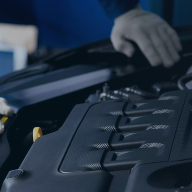
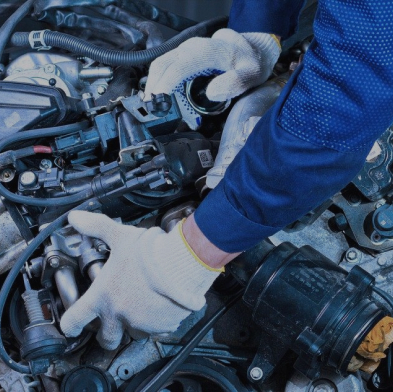
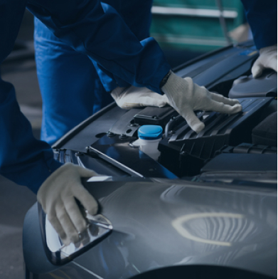
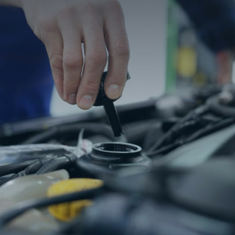
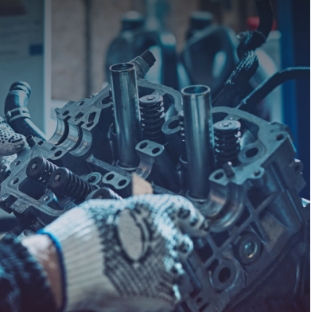

Работы
и услуги мастерской
K-POWER
Тюнинг двигателя
- проведение комплекса технических мероприятий по доводке и модернизации двигателя,
с целью повышения величины его крутящего момента и максимальных оборотов, т.е.
повышения эффективной мощности двигателя.
подробнее

Капитальный ремонт двигателя
- это ремонтный процесс, во время которого все отдельные узлы двигателя автомобиля и
весь двигатель в сборе доводятся до состояния близкого к тому, в котором двигатель
вышел с завода.
подробнее

Тюнинг карбюратора
- помогает избавится от провалов при разгоне автомобиля, а также улучшить качество
смеси, подаваемой в цилиндр. Устранение заводских недочетов и установка стоковых
запчастей позволяют добиться устранения препятствий на пути движения
топливо-воздушной смеси, что благосклонно влияет на работу двигателя во всем
диапазоне оборотов.
подробнее

Замер мощности (ДМТ)
В работе K-POWER используется Динамический Мотор Тестер (ДМТ). Он позволяет получать
достаточно качественные и адекватные графики крутящего момента и мощности.

Завтуливание масляного канала
При расточке впускных каналов иногда встречается такое явление, как вскрытие
масляного канала. При этом прорывается боковая стенка масляного канала (во впускном
канале). В таких случаях мы предлагаем завтуливание масляного канала.
подробнее

Завтуливание тосольного канала
Стоимость данной услуги, конечно, намного меньше, чем стоимость новой головки.
Однако, не всякое повреждение (вскрытие) тосольной рубашки подлежит восстановлению.
Возможность подобных работ исключительно обусловлена местом поврждения и его
технологической доступностью.

Врезка маслофорсунок
Предлагаем услугу по установке масляных форсунок охлаждения поршней в блок цилиндров
легковых автомобилей. С завода подобные форсунки стоят на многих иномарках.
Установка маслофорсунок позволяет значительно увеличить ресурс цилиндро-поршневой
группы, снизить риск перегрева поршней и их прихвата (по причине масляного
голодания).
подробнее

Напыление, наплавка, сварка
В рамках ремонта и тюнинга двигателей предоставляем услуги по ремонту и
восстановлению деталей из алюминиевых сплавов. Сварка и наплавка осуществляются
методом аргонно-дуговой сварки в в среде инертного газа (аргон).